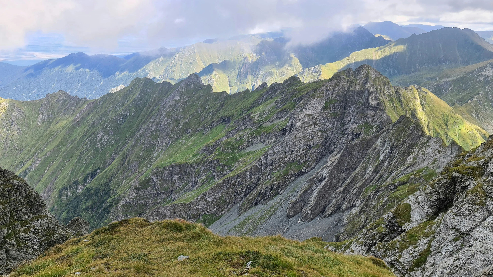
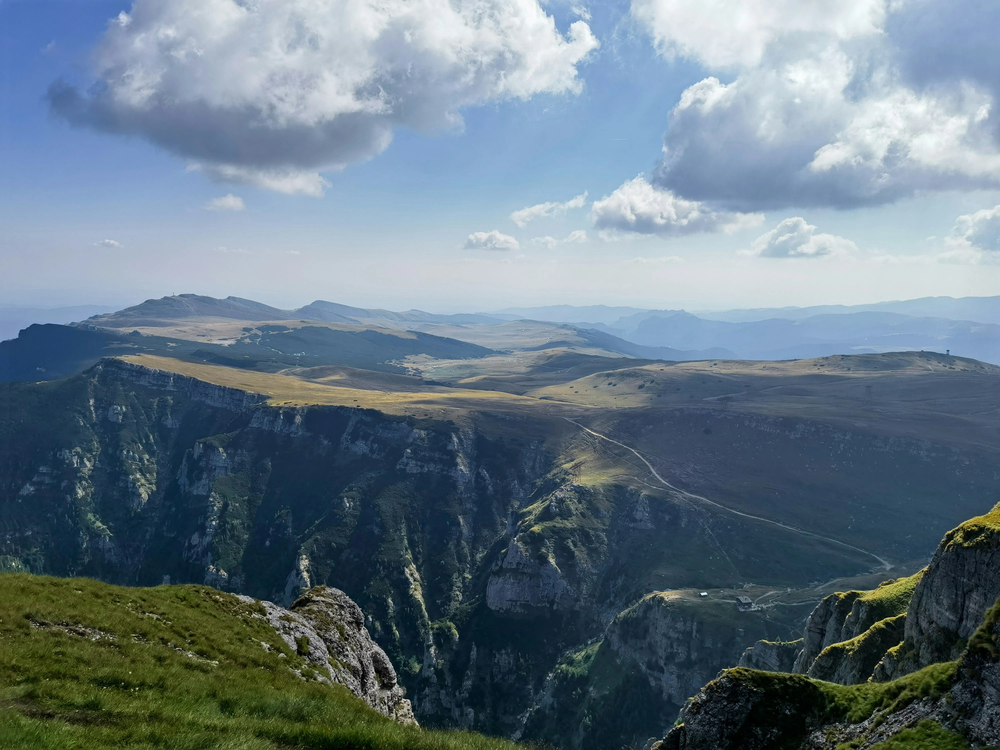
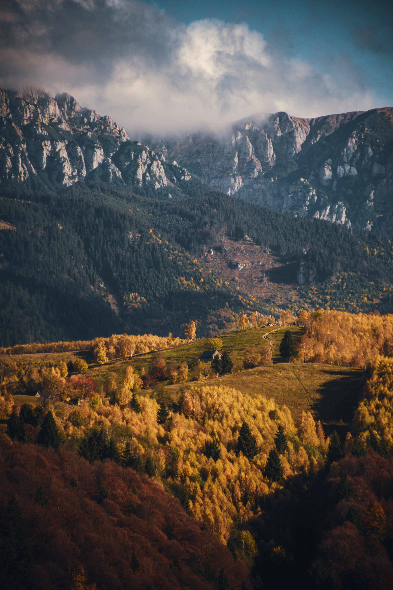

Si busqueu un destí que encara conservi l'essència de l'aventura autèntica, Romania és la vostra resposta. Lluny de les rutes massificades dels Alps, els Carpats ofereixen crestes escarpades, boscos mil·lenaris i una hospitalitat rural que us farà sentir com a casa.
1. El canó i la cresta de Piatra Craiului
Conegut com el "Montserrat de Romania" per la seva base de roca calcària, el Parc Nacional de Piatra Craiului és una de les joies del país. La seva cresta és llarga, estreta i espectacular, oferint unes vistes de 360 graus de Transsilvània. És una ruta exigent però inoblidable per a grups experimentats.

2. Muntanyes Fagaras: El sostre de Romania
Aquí és on es troben els pics més alts del país, com el Moldoveanu (2.544 m). Les rutes pels Fagaras són de tipus alpí, amb llacs glacials de color blau intens i camins que serpentejen per les crestes més altes. És el trekking pur en estat salvatge.

3. Naturalesa en estat pur: Ossos i boscos verges
Sabíeu que Romania acull la major població d'ossos bruns d'Europa (fora de Rússia)? Caminar pels seus camins és fer-ho per territori salvatge. Amb el guiatge adequat de Ruta a Ruta, podreu gaudir d'aquesta naturalesa amb total seguretat, aprenent sobre la fauna local.
4. El contrast cultural de Transsilvània
El que fa que un viatge de trekking a Romania sigui realment especial és el post-ruta. Després de la muntanya, us esperen ciutats medievals com Sibiu o Brasov, i el mític Castell de Bran. Sopar en una casa rural local amb productes km0 és el tancament perfecte per a cada jornada.

Per què anar-hi amb grup?
Romania no és el lloc més fàcil per organitzar la logística pel teu compte: el transport entre valls i la reserva de refugis o cases rurals pot ser complex si no parles l'idioma. A Ruta a Ruta, tenim col·laboradors locals que coneixen cada racó, garantint que el vostre grup només s'hagi de preocupar de caminar i gaudir.
Voleu descobrir Romania?
Preparem el vostre trekking a Transsilvània totalment a mida per al vostre grup.
Demanar informació per a Romania